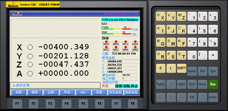
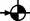

机床操作面板位于窗口的右下侧，如下图所示。主要用于控制机床的运动和选择机床运行状态，由模式选择旋钮、数控程序运行控制开关等多个部分组成，每一部分的详细说明如下：

图3.1-1 GREAT150iM铣床面板
紧急停止(黄/红色) 驱动和电机立即停止工作并关主轴、冷却液等，等待抬键重新复位并初始化值。
程序运行（绿色按钮） 运行自动加工程序，同时灯亮。
程序停止（红色按钮） 程序在自动连续运行过程中按一次则暂停，在暂停状态下再按一次则停止程序运行。在手动状态下时则用于停止当前的动作。
主轴倍率开关 主轴在运转过程中，可以实时修调转速
进给轴倍率开关 在程序运行或手动时，可以实时修调各轴的进给速度
↑、↓、→、←：用于光标移动，进行数据输入或菜单选择等。
Del：删除光标后的一个字符。
PgUp、PgDn：上、下翻页。
Alt：切换键，手、自动状态时用作坐标切换。
Back：删除光标前的一个字符。
Home：程序编辑状态时移动光标到本行行首位置;在参数菜单下时移动光标到本类参数的第一个参数位置。
End：程序编辑状态时移动光标到本行行尾位置，在参数菜单下时移动光标到本类参数的最后一个参数位置。
“Esc” 返回上一级菜单或中止某一操作
“Enter” 用于子菜单选择确认和编辑换行等
“Shift” 上档按键输入。
“程序”进入程序编辑界面
“参数”进入参数设置界面
“诊断”进入诊断功能界面
“手动”进入手动功能界面
“自动”进入自动功能界面
“MDI”进入MDI功能界面
“ ”用于手动增量档位选择，手轮倍率调整
“ ”用于自动坐标或图形显示加工方式的选择
“ ”用于程序的单段、连续加工方式的切换
“”用于控制主轴正、反转、停止、点动
“” 用于冷却液的启动和停止
“

” 用于各轴回参考点
“” 用于主轴松、紧刀
“”用于刀库刀盘的正、反转
“” 用于润滑的启动和停止
“”用于进给速率调整
“”用于主轴速率调整
“”用于安全退出系统